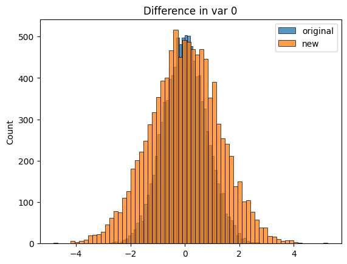
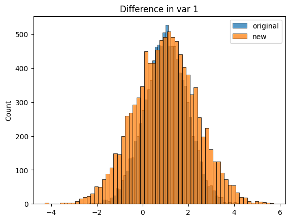
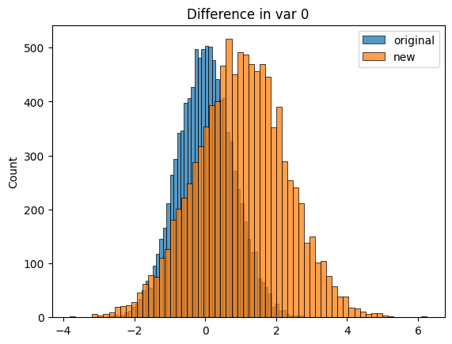
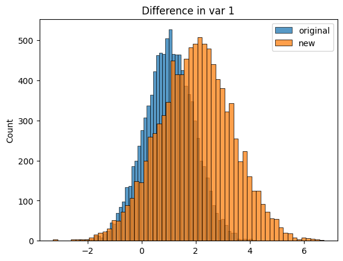
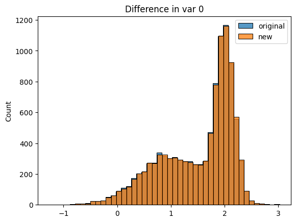
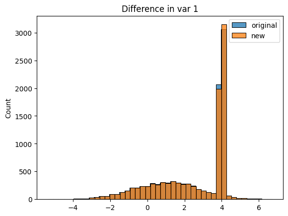
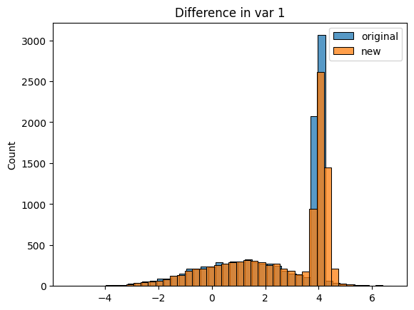

[2]:
from permanova.experiments.exp_utils import NumpyTest as npt
PERMANOVA test on tabular data#
Here are presented a series of experiments on tabular data with continuous variables. The tests are handled on different levels of noise applied to the second sample.
Normally distributed covariates#
Two covariates - low noise#
[3]:
sample_1, sample_2 = npt.generate_samples_with_normal_covariates(
dim=2, noise_mean=0, noise_std=1, size=10000
)
npt.test(sample_1, sample_2, show_plots=True)


Computing permutations...
100%|██████████| 10000/10000 [00:08<00:00, 1208.86it/s]
p-value: 0.79082
Two covariates - high noise#
[4]:
sample_1, sample_2 = npt.generate_samples_with_normal_covariates(
dim=2, noise_mean=1, noise_std=1, size=10000
)
npt.test(sample_1, sample_2, show_plots=True)


Computing permutations...
100%|██████████| 10000/10000 [00:06<00:00, 1652.49it/s]
p-value: 0.0001
Multiple covariates - low noise#
[5]:
sample_1, sample_2 = npt.generate_samples_with_normal_covariates(
dim=10, noise_mean=0, noise_std=1, size=10000
)
npt.test(sample_1, sample_2, show_plots=False)
Computing permutations...
100%|██████████| 10000/10000 [00:14<00:00, 668.29it/s]
p-value: 0.9996
Multiple covariates - high noise#
[6]:
sample_1, sample_2 = npt.generate_samples_with_normal_covariates(
dim=10, noise_mean=1, noise_std=1, size=10000
)
npt.test(sample_1, sample_2, show_plots=False)
Computing permutations...
0%| | 0/10000 [00:00<?, ?it/s]100%|██████████| 10000/10000 [00:15<00:00, 657.93it/s]
p-value: 0.0001
Mixture of gaussians covariates - low noise#
Two covariates - low noise#
[7]:
sample_1, sample_2 = npt.generate_samples_with_mixture_covariates(
dim=2, noise_mean_perc=0.01, noise_std_perc=0.01, size=10000
)
npt.test(sample_1, sample_2, show_plots=True)


Computing permutations...
100%|██████████| 10000/10000 [00:09<00:00, 1105.07it/s]
p-value: 0.70163
Two covariates - high noise#
[8]:
sample_1, sample_2 = npt.generate_samples_with_mixture_covariates(
dim=2, noise_mean_perc=0.1, noise_std_perc=0.1, size=10000
)
npt.test(sample_1, sample_2, show_plots=True)

Computing permutations...
100%|██████████| 10000/10000 [00:09<00:00, 1046.79it/s]
p-value: 0.0001
Multiple covariates - low noise#
[9]:
sample_1, sample_2 = npt.generate_samples_with_mixture_covariates(
dim=10, noise_mean_perc=0.01, noise_std_perc=0.01, size=10000
)
npt.test(sample_1, sample_2, show_plots=False)
Computing permutations...
100%|██████████| 10000/10000 [00:16<00:00, 607.47it/s]
p-value: 0.9911
Multiple covariates - high noise#
[10]:
sample_1, sample_2 = npt.generate_samples_with_mixture_covariates(
dim=10, noise_mean_perc=0.1, noise_std_perc=0.1, size=10000
)
npt.test(sample_1, sample_2, show_plots=False)
Computing permutations...
100%|██████████| 10000/10000 [00:18<00:00, 548.29it/s]
p-value: 0.0001